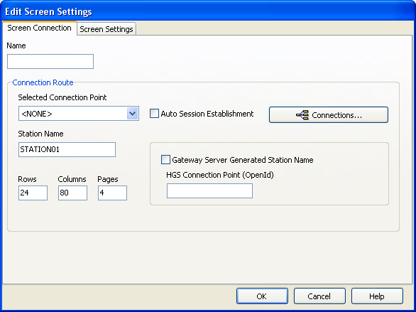

The Edit Screen Settings dialog is used to add and edit
the T27 configuration screens. It contains the Screen Connection and Screen
Settings tabs.
Screen Connection tab
The Screen Connection
tab defines the screen name and connection route information.
Figure 1. Edit Screen Settings dialog

- Name
- Type a name for the new screen. Up to 24 screens can be configured.
- Connection Route
- Set the following options:
Selected Connection Point: Select a
connection point to be used when the screen is opened.
The
first time this screen is accessed, the only available option is <NONE>.
You must configure your host connections by clicking Connections.
Refer to Configure host connections for more information.
Auto Session Establishment: Enables
auto session establishment.
Station Name: Type a name for station.
Rows: Type the number of rows allowed
in the screen.
Columns: Type the number of columns
allowed in the screen.
Pages: Type the number of pages.
Gateway Server Generated Station Name:
Enables the Gateway server generated station name.
HGS Connection Point (OpenId): Type
the open ID of the Gateway server.
Screen Settings tab
The Screen Settings
tab contains the
Basic Options,
Datacomm
Options, and
Keyboard Options tabs.
Basic Options tab
- Visible delimiters
- If enabled, field delimiters are displayed when in forms mode.
Refer to Toggle Forms located in the Datacomm Options tab
below.
- Auto-save pages
- If enabled, the contents of all pages in an environment are saved
to disk when the environment is closed. The pages are then restored
when the environment is reopened.
Note: As a result of this action,
page one is overwritten on start up.
- Trace on Start Settings
- The controls in this group determine what trace activity is to
take place, if any, when the screen is first opened. Select one of
the following options:
- None: No tracing activity takes place.
- To Window: A separate trace window opens
to display the trace.
- To File: The Emulator Trace File dialog
opens when the screen is opened. In the Emulator Trace File dialog,
type the text file name for the trace file. The trace file is normally
stored in C:\Documents and Settings\username\Local
Settings\Temp directory and has a .txt extension.
- To Both: Traces to both a window and file.
Datacomm Options tab
The Datacomm Options
tab governs communications between the host and PC. Multiple options
can be selected.
- Transmit Full Page in Forms Mode
- The full page is transmitted to the host when in forms mode (see Toggle Forms below). If this box is
not checked, only the unprotected data from the home position to the
cursor will be transmitted.
- Convert CR to CRLF
- A line feed character is appended to any carriage return character
sent by the host application.
- Convert LF to LFCR
- A carriage return character is appended to any line feed character
sent by the host application.
- SOH Clears Screen
- The screen is cleared upon receipt of an SOH character.
- SOH Clears Forms Mode
- Forms mode is terminated upon receipt of an SOH character.
- Position to Left of UPF
- The effect of the Home function places the text cursor to the
first character position of a right justified, unprotected field;
otherwise, the cursor will be moved to the data entry position, or
right-most position of the field.
- Transmit Line at a Time
- Forces the normal Transmit to act like the Transmit Line key.
- Hold in RCV Mode
- The screens remain in receive mode after getting a message from
the host application (see Stay in RCV below).
- Beep Alarm Sound
- Turns an audible beep on. If this box is not checked, no audible
sound is heard.
- SO/SI Translation
- Enables SO/SI (7-bit to 8-bit/8-bit to 7-bit) character translation
on data transmitted to the host.
- SO/SI Extended Characters
- Enables SO/SI (7-bit-to-8-bit/8-bit-to-7-bit) character translation
on data received from the host. This option is not required if the
host transmission is prefixed by ESC SO sequences.
- DC2 Function
- The option in this group instruct BlueZone T27 how to interpret
the DC2 character when received from the host:
- Toggle Forms: Toggles the to/from
forms mode upon receipt of the DC2 character.
- Advance Page: Stay in the current mode
(forms or no-forms) and advance the DataComm pointer one position
to the right upon receipt of the DC2 character.
- DC1 Function
- The options in this group instruct BlueZone T27 how to interpret
the DC1 character when received from the host. These options are mutually
exclusive:
- Stay in RCV: Choose this option
to keep the screens in receive mode upon receipt of a DC1 character.
This option nullifies the Hold in RCV option (see above).
- Line Clear: Choose this option to clear
the line upon receipt of the DC1 character.
- Alternate Delimiters
- In this group, type the alternate delimiters sent by the host
application. Alternate delimiters are only required when in forms
mode:
- Left Character (hex): Type the hex character
sent and interpreted as the beginning delimiter of left-justified
unprotected fields. The default is the US character (1F).
- Right Character (hex): Type the hex character
sent and interpreted as the ending field delimiter. The default is
the RS character (1E).
Keyboard Options tab
The Keyboard Options
tab governs keyboard actions. Multiple options can be selected.
Note: There
are additional keyboard options located on the Miscellaneous tab in
the Keyboard Options dialog.
Refer to Keyboard Options dialog for
information on the additional keyboard options.
- Start in UPPERCASE Mode
- The keyboard automatically starts in UPPERCASE mode. Enabling
this feature has the effect of turning on the Caps Lock key when the
BlueZone T27 session is launched. The end user can turn off Caps
Lock by pressing the Caps Lock key. This feature is useful when your
host requires that the entire log on process be in uppercase characters
but, you still want the option to revert to standard case at any time.
- Force UPPERCASE Only
- Converts lowercase characters that are typed to their uppercase
equivalents. The Shift Key will reverse the effect of Force
UPPERCASE Only while it is being held down. In other
words, if the Force UPPERCASE Only check box
is enabled, and the Shift key is held down while pressing a letter
key, the input will be lower case.
- Add LF to Return
- A line feed character is appended when the Carriage Return key
(Enter) is pressed. If this box is not checked, only the carriage
return is issued.
- Automatic Field Advance
- Advances the cursor automatically to the next field when the current
field becomes full.
- Right Justified is Numeric-Only
- Only the characters 0-9, space, period (.), and comma (,) will
be allowed in a right-justified field. If the box is not checked,
any character will be accepted.
- Insert Space in Insert Mode
- A space is inserted whenever the Insert key is pressed.
- Specify Sends Page Number
- The page number (in addition to the normal column and row designating
the cursor position) is sent the host application when the Specify
key is pressed.
- Specify Sends Hex
- The cursor position (column and row) is sent in hexadecimal when
the Specify key is pressed. If this box is not checked, the cursor
position is reported in ASCII.
- Destructive Backspace Key
- Erases characters as the Backspace key is pressed.
- Ignore Programmed Macros
- The emulator ignores any host or manually programmed T27 macro
keys. Checking this box does not prevent Enable scripts related to
action keys from running. The box is checked by default.
- CR acts like TAB
- Makes the Carriage Return key (Enter) behave like the Tab key.
- Tab Stops
- Type the column positions (separated by commas) of the tab stops.
The default is 1,9,17,25,33,41,49,57.
- Character Translation Table
- Select a country that most closely matches your keyboard requirements.
- Edit Translation Tables: Opens the Character
Translation dialog. This dialog provides the ability to select and
edit character translation sets for specific countries.
Refer to Configuring character translation for
more detailed information.
- Clear Function
- This group specifies what action occurs when the Clear key is
pressed. These options are mutually exclusive.
- Clear Entire Screen: Clears the entire
screen.
- Clear Fields Only: Clears all unprotected
fields.